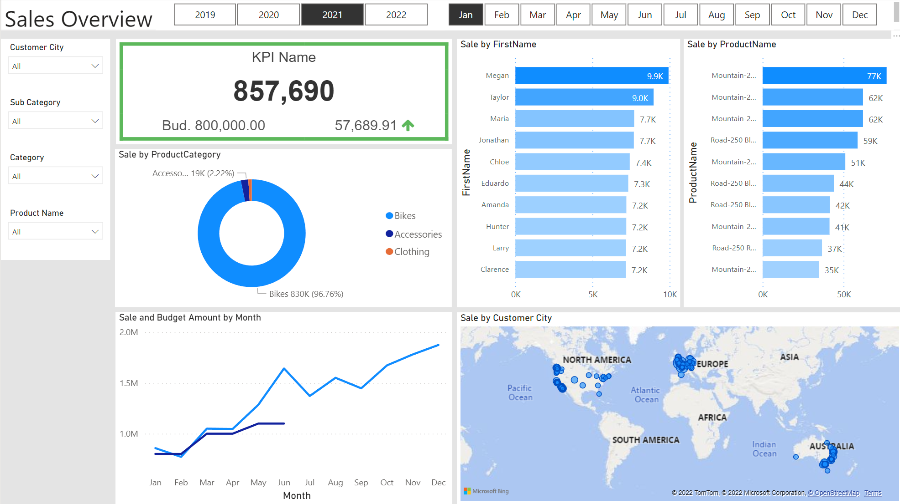
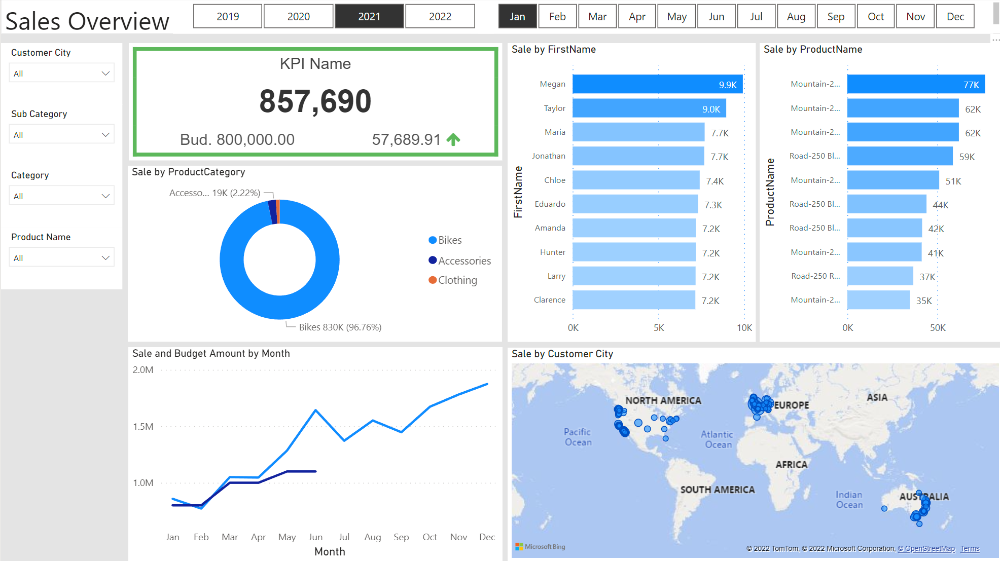

This is the report of internet sales from 2019 to 2021. The data is collected from AdventureWorks Database. I used the SQL to clean and select the neccessary data to analyzed. To visualized, I used the Power BI and made 2 dashboards

This project is general analyzed the covid disease around the world from 2020. I chose this time because the vaccine is available around the world now. This analyzed help me to take looks how the covid infected to people around the world after the vaccine campain.

This project is collecting the Amazon products title, price, rating, rating counts and url. I used Python, Beautiful Soup to scrap products and save them into csv files. With this collections, I may start to think about the new project about the new trending.

This is the IBM Data Science Capstone project from Coursera. The data is collected by SpaceX API and webscrapping from Wiki. Wrangled, Analyzed and Predicted the SpaceX first stage landing successufully

In this project, I used the Tensorflow to classify the image of Coffee leaf disease into 4 Categories: Rust, Phomia, Miner, Normal. The images are collected from Kaggle. Although this is the first project that I used the Tensorflow, I still enjoy learning new thing about the Tensorflow.

This is my first project when studying data science. I and my teamates analyzed the trend of rental bike in New York from 2016 to 2020. The data is really large, we have to use Dask to handle it, and predicted the next 2 years trend by using Armina Time Forcast.